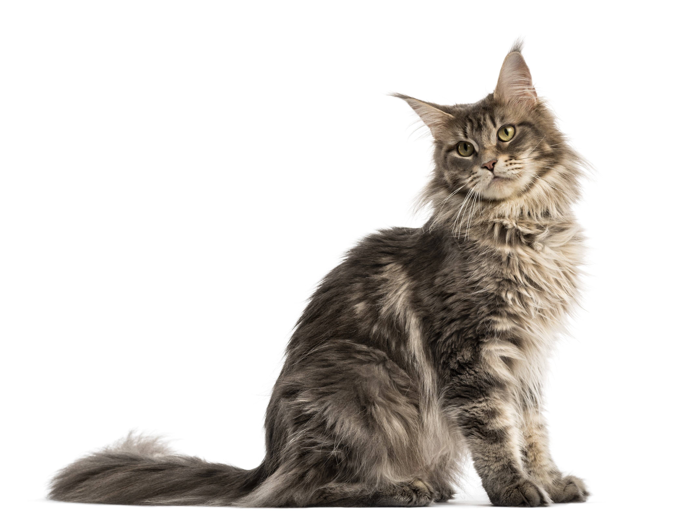

История
Как появилась порода?
О существовании мейн-кунов мир узнал от американских заводчиков. Название породы переводится как «мэнский енот». И если с первым термином в этом словосочетании все ясно («мейн» – от названия американского штата Мэн), то второй требует уточнения. Необычный полосатый окрас и пушистые хвосты мейн-кунов породили среди бридеров легенду о том, что порода получена методом скрещивания представителя семейства кошачьих с енотом. Байка осталась байкой, но словечко «кун» (сокращение от англ. racoon – енот) к породе все же прилипло.
Самой красивой версией появления исполинских котофеев в Северной Америке можно считать легенду о неудавшемся побеге королевы Марии Антуанетты. Ожидая расправы со стороны французских революционеров, супруга Людовика XIV собралась бежать на американский континент и для подстраховки отправила впереди себя корабль с дорогими сердцу вещами, включая любимых длинношерстных кошек. Усато-хвостатый груз доплыл до берегов Новой Англии в целости и сохранности и, свободно скрещиваясь с местными короткошерстными кошками, дал начало новой породе, в скором времени расселившейся по территории всего штата.

Настоящим первопроходцем в становлении породы мейн-кунов стал кот по кличке Капитан-Дженкс-из-морской-кавалерии. Этот пушистый гигант вызвал неописуемый восторг зрителей в 1861 году, отметившись на выставках кошек в Бостоне и Нью-Йорке и затмив популярных тогда ангоров. Но уже к XX столетию мэнские великаны сдали свои позиции и были почти на полвека вытеснены персами и сиамами. После окончания Второй мировой войны куны вновь заявили о себе, правда, на тот момент только в пределах американского континента. В 1953 году порода обзавелась собственным официальным клубом, а в 1968 г. была основана первая ассоциация любителей и заводчиков «мэнских енотов» Maine Coon Breeders and Fanciers Association/MCBFA. Что касается Европы, то до нее куны добрались только в 70-х годах прошлого столетия.